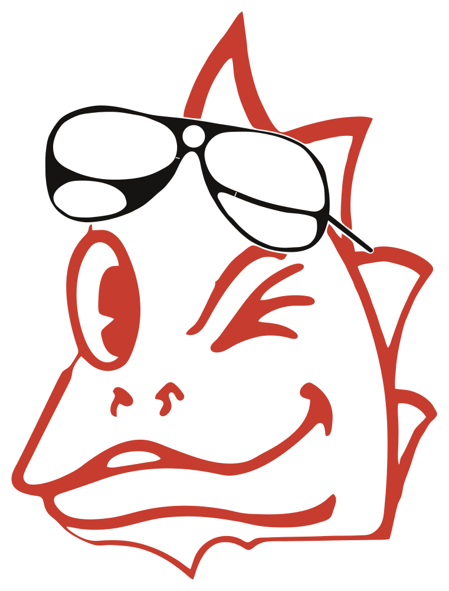
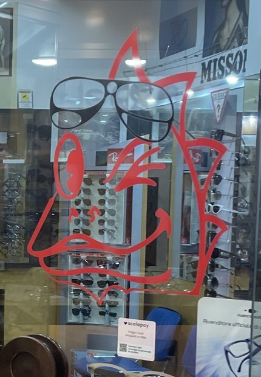
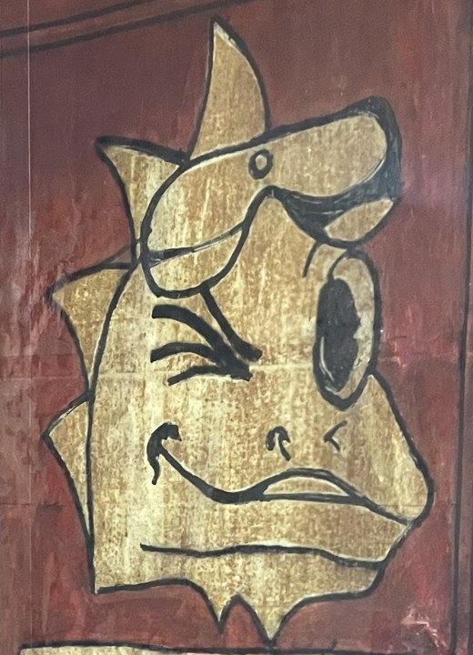

Il draghetto storico, restaurato
È il draghetto rosso con gli occhiali da sole che sta da anni sulla porta del negozio. Non l'abbiamo reinventato: l'abbiamo ricalcato dalle foto della vetrofania, pulito e messo in vettoriale. Stesso personaggio, stessa posa, stesso occhiolino: chi passa davanti al negozio lo riconosce subito.
La foto accanto al restauro


FotoRestauroLa foto è stata scattata da dentro il negozio, quindi qui è girata come uno specchio per combaciare con il disegno visto dalla strada. Il bordo sinistro, tagliato nella foto, è stato completato con un secondo fotogramma dello stesso video.


Cosa abbiamo sistemato
- Raddrizzato: muso a sinistra come si vede dalla strada (c'è anche il file specchiato).
- Bordi puliti: tolti i morsi dei riflessi e le sbavature del taglio; curve morbide, spigoli vivi solo dove c'erano (punte della cresta, mento, spine).
- Cresta: la punta, rovinata dalla luce del lampione, è tornata appuntita.
- Occhiali: ridisegnati sulle linee bianche del ritaglio: montatura, ponte tondo, lenti, astina e i due segnetti delle cerniere.
- Stacco occhiali/rosso costante (come il filo chiaro della vetrofania), così si stampano e si tagliano bene.
- Proporzioni: non toccate. Pose, spessori e forme sono quelli dell'adesivo.
- Colore: rosso misurato sulla foto, #C63D2F; occhiali #161413.
Lo stesso draghetto, in sei versioni
Per la tipografia o il taglio vinile usare SVG, PDF o EPS: sono vettoriali e si ingrandiscono senza perdere qualità (il PDF si apre anche con Illustrator). I PNG hanno lo sfondo trasparente; le versioni «su bianco», «su scuro» e i JPG hanno il fondo pieno.
Draghetto + Ottica Macrì
Animazione d'avvio
Circa 4,6 secondi: il contorno rosso si disegna da solo, gli occhiali scendono sulla fronte, l'occhiolino, un riflesso sulle lenti e una scintilla nell'occhio, poi compare la scritta. Si chiude ferma sul logo.


File nella cartella
*.svg vettoriali (cartella storico/)png/ 2000 px e -4000 px, trasparenti + «su bianco/su scuro»jpg/ 2000 px su fondo pienopdf/ vettoriali (si aprono con Illustrator)eps/ vettoriali EPS (senza la velatura lenti della versione migliorata)animazione/ MP4, MOV con canale alfa (ProRes 4444), AVI, GIF, avvio.html e draghetto-avvio.jsconfronto/ ritagli delle foto usate per il confronto